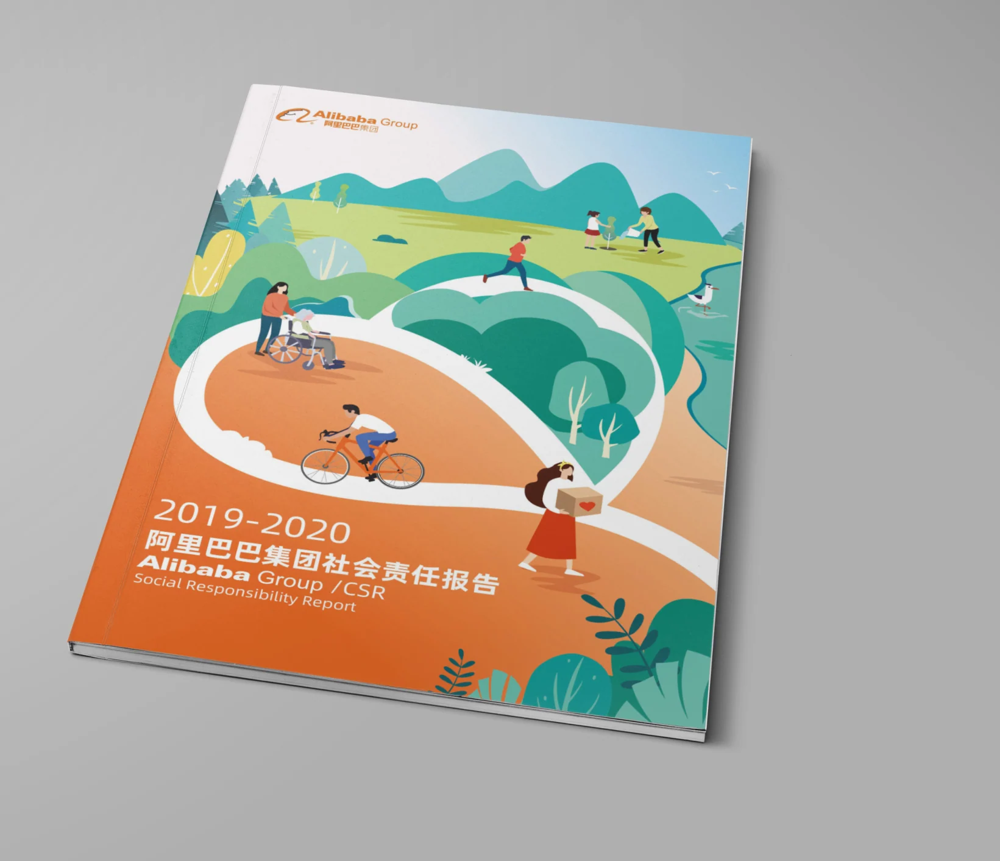
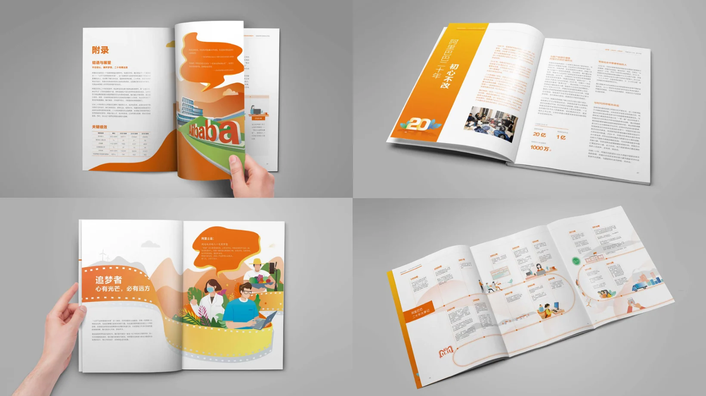
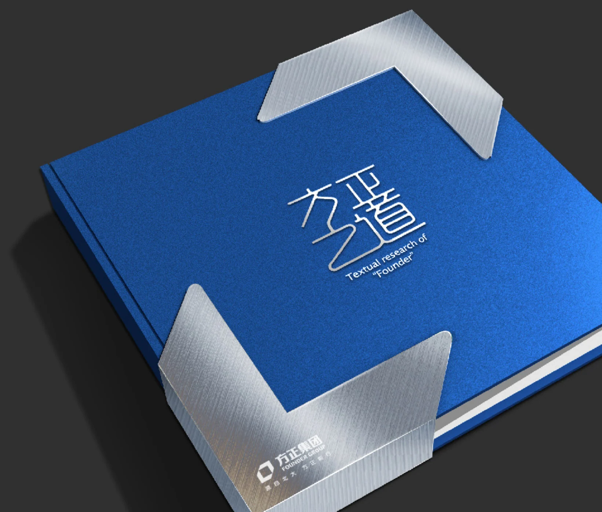
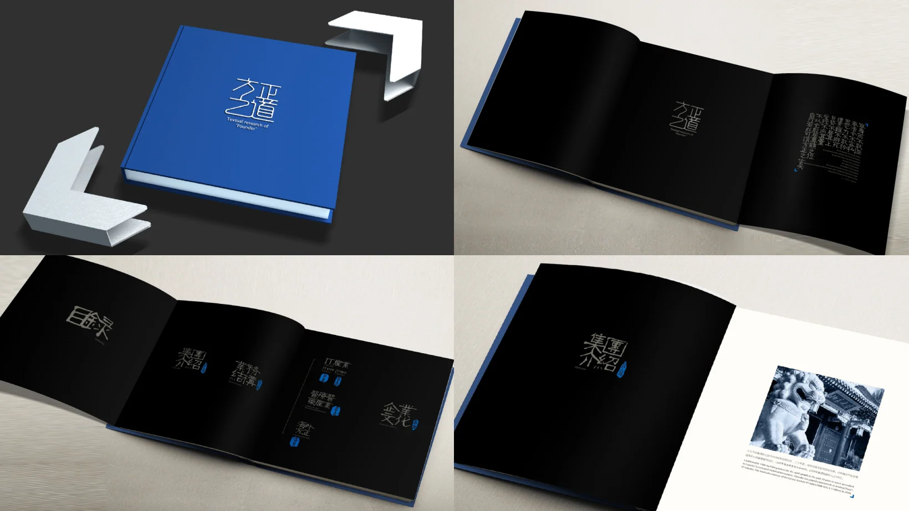
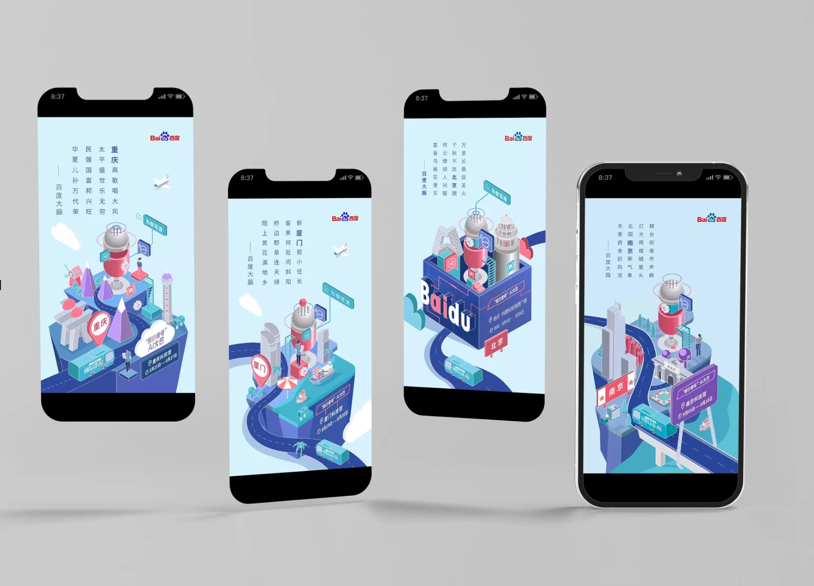
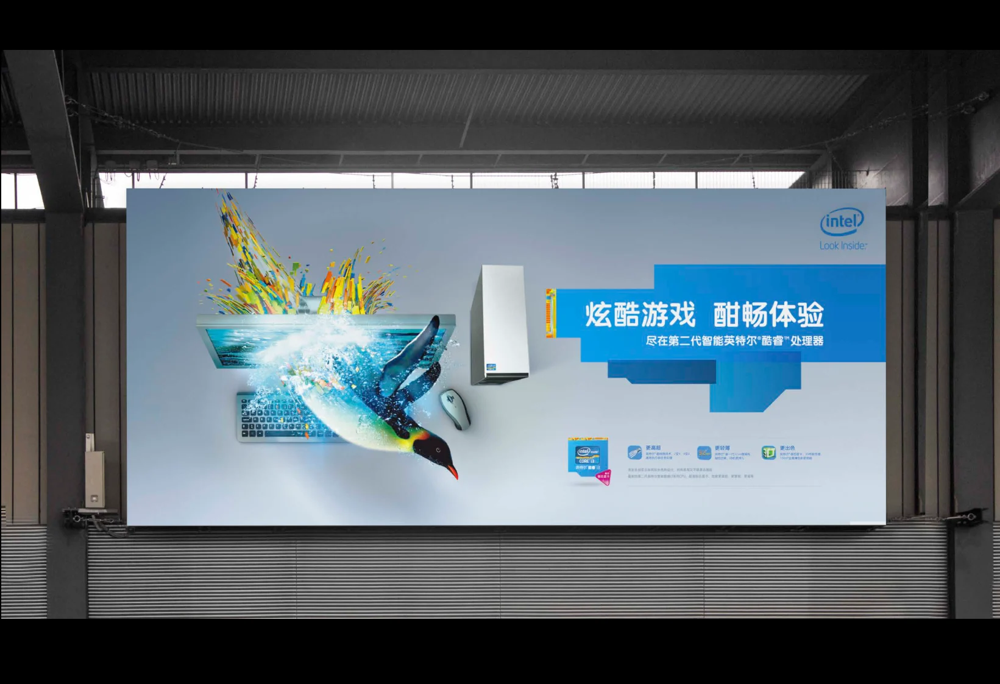
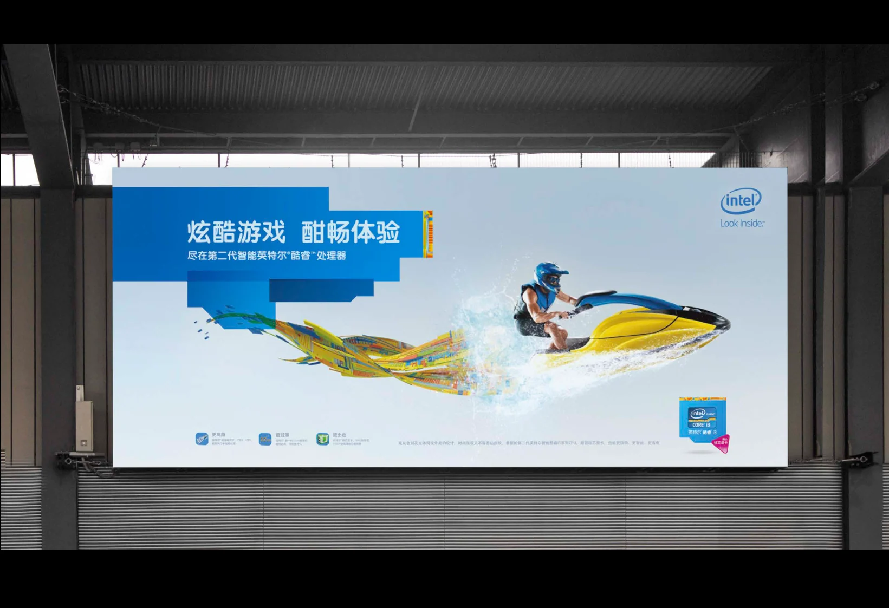

Step 04企业社会责任传播与品牌推广
头部企业传播项目
面向企业报告、集团画册、互动巡展与户外广告，根据不同媒介的阅读场景组织内容，统筹策略、视觉和交付。
- 我的职责
- 创意及视觉统筹
- 项目范围
- 阿里巴巴集团、方正集团、百度与 Intel
Social Responsibility Report
阿里巴巴集团
2019–2020 社会责任报告
用插画建立叙事基调，用信息图与版式呈现集团大事记、社会责任项目和关键内容。




Corporate Brand Book
方正集团
「方正之道」品牌宣传画册
通过精装结构、金属护角和特种纸传达集团形象，内页用黑底留白与印章建立阅读节奏。




Interactive Roadshow
百度
「旅行者号 AI 大巴」巡展 H5
以等距插画和移动端页面承接城市巡展，将 AI 大巴及其应用场景组织成便于浏览的内容。


Outdoor Campaign
Intel
酷睿处理器户外海报
以醒目的图像和简短文案，在户外媒介呈现酷睿处理器的性能与体验主题。



